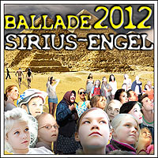
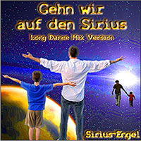
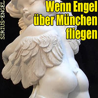

Musikvideo
Wenn Engel über München fliegen
… und in Salzburg rechts abbiegen,
um in Stuttgart dann zu landen,
haben sie nicht die A8 verstanden.
um in Stuttgart dann zu landen,
haben sie nicht die A8 verstanden.
Studio-Projekt
SIRIUS-ENGEL, ja, deine Kinder würden die Lieder mitsingen. Eine elektromagnetische Wechselstrom-Kapelle mit dem kosmischen Tanz zur seelischen Liebkosung.

SIRIUS-ENGEL war ein Studioprojekt von Teflon Fonfara. Das Konzept beinhaltet reduzierte einfache Songs zu Themen wie „2012 – Weltuntergang“ und die Zeit danach.
Erlebe feinstoffliche Stereo-Schwingungen und den Mut zur volksnahen Tanzmusik für magnetisierte Erdenbürger.
Es gibt weltweit einige SIRIUS-ENGEL. Oftmals erkennen sie sich. Und wenn dir in einer Notlage jemand hilfreich die Hand reicht, könnte dies ein SIRIUS-ENGEL gewesen sein.
SIRIUSENGEL sind humorvoll und möchten mit witzigen Botschaften Spaß und Harmonie teilen. Es sind die Lieder, die du als Kind gerne gesungen hättest.
Auch dein Kind würde die Songs cool finden und mit Freude mitsingen. Und vielleicht bist auch du ein SIRIUS-ENGEL, du hast es bloß noch nicht gemerkt. Sei einfach dabei und fühle wie ein SIRIUS-ENGEL.


Die Player werden erst nach Klick geladen (instantlicensing.com).
(Min. 0:52) Das Gute-Nacht-Lied. Die sehr kurze Einschlaf-Geschichte für Dein Kind.
(Min. 4:31) Fun-Song für die ganze Familie. Video hier
(Min. 9:22) Version „Sonne!“ Langer Ethno-Mix, viel Groove, wenig Text. Video hier
(Min. 3:45) Lustiger Song über Engel, die sich verfliegen :-) Zum Tanzen und Mitsingen. Video hier
(4:11) Fun-Song mit der Geschichte, warum die Welt 2012 nicht untergeht. Video hier
(7:34) Hier erfahrt Ihr die ganze Geschichte mit vollem Text! Endlich eine wirklich fröhliche Ballade zum Weltuntergang 2012! Video hier